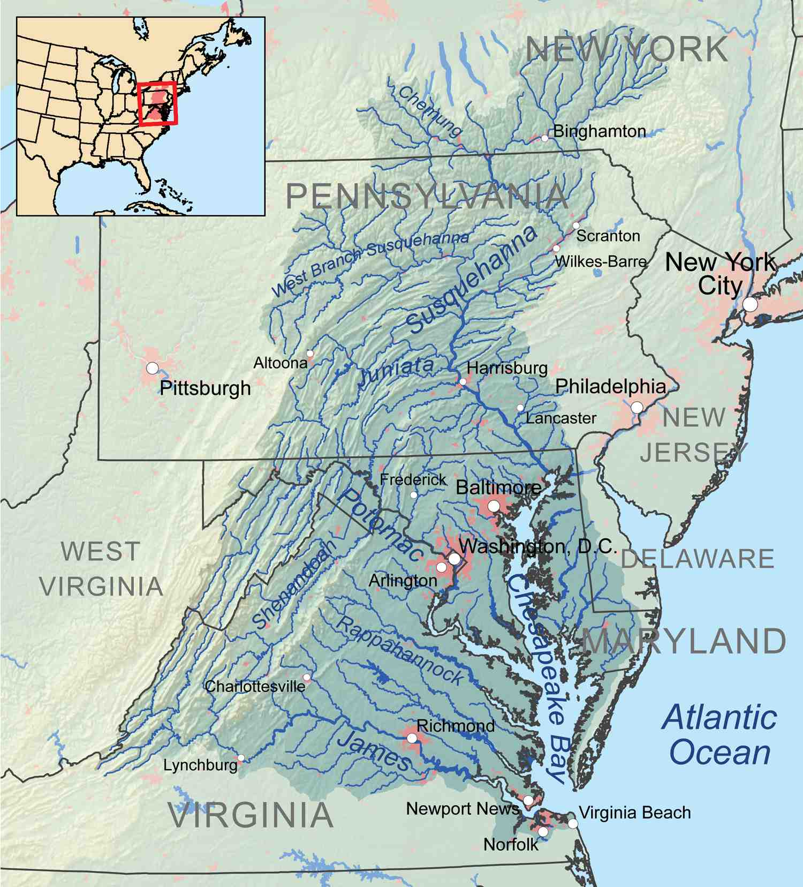

Chesapeake Bay Watershed Phase 5 Community Model Visualization Tool:
Select Basin:
Upper Susquehanna
Susquehanna, West Branch
Juniata
Lower Susquehanna
Upper Potomac
Middle Potomac
Lower Potomac
Shenandoah
Upper Western Shore
Middle Western Shore
Lower Western Shore
Upper Eastern Shore
Middle Eastern Shore
Lower Eastern Shore
Upper Patuxent
Lower Patuxent
Mattaponi
Pamunkey
Lower York
Upper Rappahannock
Lower Rappahannock
Upper James
Lower James
Appomatox
James Below Richmond
Choose Scenario to run:
1985 High Historical Load
1985 No-Action
2010 No-Action
2010 Tributary Strategy
E3 - Everyone, Everywhere, Everything
